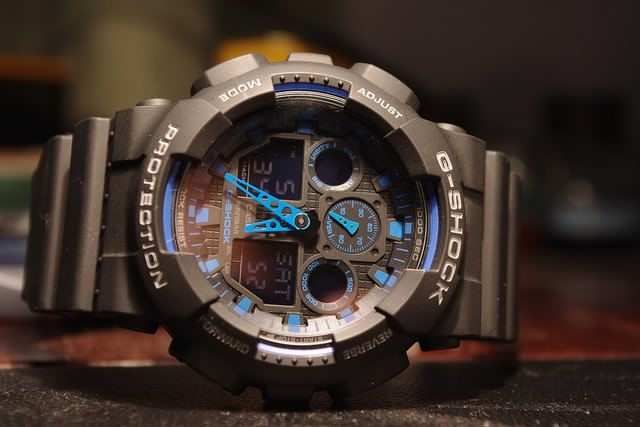
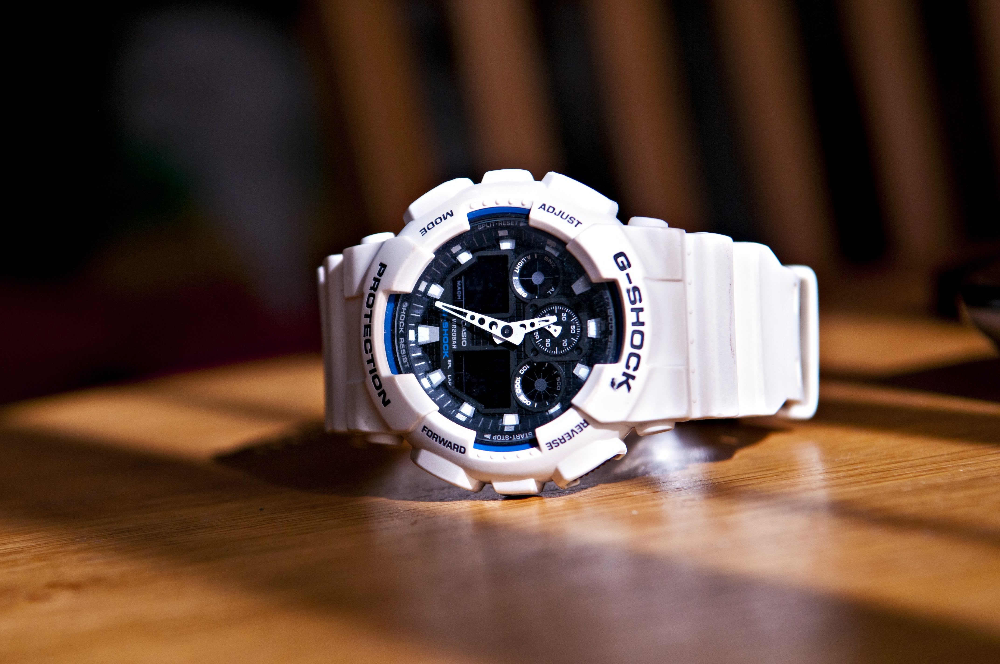

SPORTS...
Sports can be subjective, some might love to hike and others might enjoy the ocean. Whatever may be your choice, we have a watch suited for those needs.
There is no defiant leader in the world of sport watches. A good beginner choice can be the G-shock from Casio.

The GW9400-1 is one such watch from Casio. It is touted as the toughest and most durable of all watches offering many advantages for the more adventure inclined.
G-force is everything, and the main selling point of a G-shock is surviving the toughest of the toughest knocks that would turn other watches into broken pieces. Able to sustain above 15Gs, more than needed for flight recorder databases, it truly is the toughest watch in that sense.
UNDERWATER
But what about its underwater capabilities? The G-shock boasts up to depths of up to 200 meters, and if that isn't enough for underwater dwelling, the Oris Pro Diver Pointer Moon boasts of depths of up to 3,300 feet
With sapphier crystals domed on both sides of the watch to improve readabilty in darkness, it truly is best diving watch around.
BATTERY
The Casio once again trumps against all with a solar powered battery ensuring that you don't end up with a non functioning watch in your most needed time. The solar power is also able to take energy from fluroscent bulbs in your house, meaning its always charged and ready to go with your next adventure.
KNOW WHERE YOU ARE
With GPS satellite technology, the Caiso G-shock is able to sustain itself a consistent time frame so that you never end up out of the loop for eve a second, and with emergancy single senders it will call for help in even your darkest hours.

With all of these astonishing feats, the G-shock is a comfortable to wear watch that never gives away its tough status, be it a fall from a tower or being run-over with a truck, the G-shock keeps ticking.
.jpg)
.jpg)